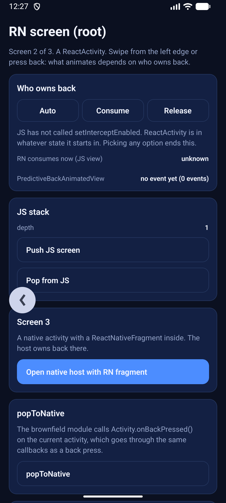
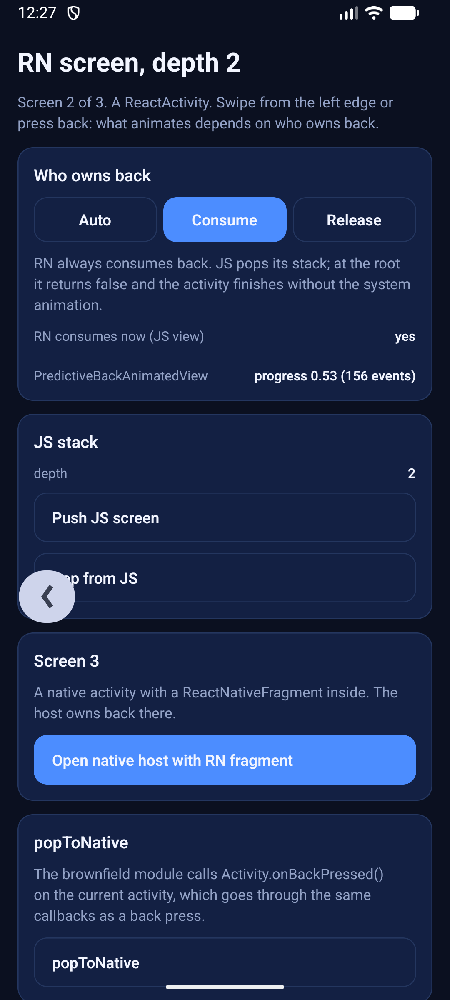
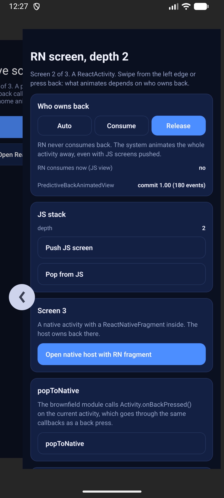
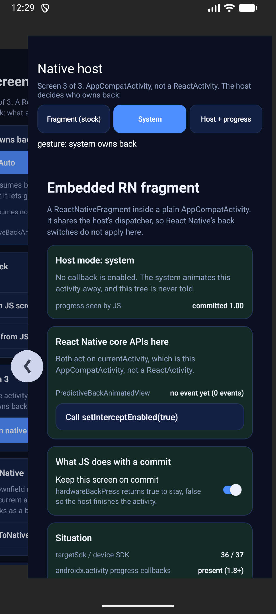
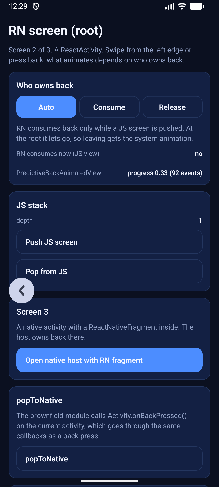

Research 2 — The predictive-back RN branch in a brownfield app
Grzegorz Kruk, Callstack · 1 Oct 2026 · demo repo rn-predictive-back-brownfield · RN branch
grzegorzkruk/predictive-back-swipe @ 03c7a9a0b59 · follows Research 1
- The branch blocks the system animation by default. On targetSdk 36,
ReactActivityadds an enabled back callback inonCreate. An app that never touches the new API gets no predictive-back animation when it leaves an RN screen. That breaks our main goal: it has to work out of the box. BackHandler.setInterceptEnabledworks in aReactActivity, but it goes to the wrong activity in brownfield. It acts oncurrentActivity. A hidden RN screen that calls it changes nothing, and its own activity keeps the old value. In my run, the RN screen said "released" but still blocked the system animation.- Inside a
ReactNativeFragment, none of the new APIs do anything.setInterceptEnabledis ignored andPredictiveBackAnimatedViewgets 0 events, because the host is not aReactActivity. - The commit notification fires when the system closes the whole activity and runs JS back listeners
on a screen that is already going away. Returning
truethere does nothing.
isFinishing fix. The animation and progress pieces should stay in
community packages. See the RFC proposal.
Setup
Same app as Research 1 (native screen → RN screen → native screen with an RN fragment), same emulator
(Android 17, API 37, gesture navigation, targetSdk 36), built against the local RN checkout published as
react-android:1000.0.0. Two additions for this research:
- The launcher has a second button, "Open React Native screen (back not set up)". It opens screen 2 with
ownership unset, so JS never calls
setInterceptEnabled. This is "an app that ignores the new API". - Screens 2 and 3 each render a
PredictiveBackAnimatedViewand show the events it receives. Screen 3 also has a button that callsBackHandler.setInterceptEnabled(true).
What the branch adds (34 files, 8 commits)
| Piece | What it does |
|---|---|
Consume callback in ReactActivity | OnBackPressedCallback(true) added in onCreate on targetSdk 36+. On commit it runs the old onBackPressed path, so hardwareBackPress reaches JS. |
BackHandler.setInterceptEnabled(bool) | JS → DeviceEventManagerModule.setInterceptEnabled → ReactActivity.setInterceptEnabled on currentActivity. Turns the callback on or off. |
SystemNavigationBackObserver | Platform callback at PRIORITY_SYSTEM_NAVIGATION_OBSERVER (API 36). When RN has let go, it tells JS after the system back commits. |
InAppPredictiveBack | Platform OnBackAnimationCallback (API 34). Sends start/progress/cancel/commit to listeners, with its own commit rule (25% of width or 900 dp/s). |
PredictiveBackAnimatedView | New native component (Java view manager + JS + types). Registers on currentActivity as? ReactActivity when attached and emits onProgress. |
add/removePredictiveBackHandler, …ProgressListener, PredictiveBackEvent | Public Java API for native libraries to get progress. |
getBackPressedCallback() | Lets a library turn RN's callback off. |
invokeDefaultOnBackPressed guard | Returns early when the activity is already finishing (avoids a double finish). |
| Other | Test, ReactAndroid.api and ReactNativeApi.d.ts snapshots, RNTester example and playground, gradle.properties reactNativeArchitectures=arm64-v8a (local only). |
Experiments
| # | Where | What I did | What happened | |
|---|---|---|---|---|
| E1 | Screen 2, ownership unset, JS root | Slow swipe from the left edge | No system animation. Logcat: hardwareBackPress at root -> not handled, then the activity finished without an animation. PredictiveBackAnimatedView: 0 events. | blocks by default |
| E2 | Screen 2, Consume, JS depth 2 | Slow swipe | in-app: back started / committed. Progress 0.15 → 0.34 → 0.51 → commit 1.00 (180 events), then JS popped to depth 1. | works |
| E3 | Screen 2, Release, JS depth 2 | Slow swipe | The system animated the whole RN activity away to the launcher. Then the observer said system back committed, notifying JS, and JS popped to depth 1 on an activity that was already finishing. | notify too late |
| E4a | Screen 2 Auto at depth 2 (consuming) → open screen 3, mode Fragment | Swipe on screen 3 | Screen 3 JS released, and the shared listener on hidden screen 2 popped to depth 1. Then screen 2 called setInterceptEnabled(false) while currentActivity was screen 3, so the call was dropped. | wrong activity |
| E4b | Screen 3, mode Host + progress | Slow swipe | Host progress 0.36 → commit, forwarded to JS. The embedded PredictiveBackAnimatedView stayed at 0 events. | dead in fragment |
| E4c | Screen 3 | Pressed "Call setInterceptEnabled(true)", then System mode and swipe | The call was ignored. The system cross-activity animation still played (screenshot below). | no-op in fragment |
| E4d | Back on screen 2, JS root, JS shows "RN consumes: no" | Slow swipe | in-app: back started, progress 0.33–0.40 (114 events), no system animation, then hardwareBackPress at root -> not handled. RN was still consuming because of the call dropped in E4a. | stale state |


PredictiveBackAnimatedView at 0.53.

setInterceptEnabled(true): the system animation still plays; the RN view shows 0 events.
Findings
1. RN takes back by default on targetSdk 36
ReactActivity creates mBackPressedCallback as new OnBackPressedCallback(true) and adds
it in onCreate. Any enabled callback turns off the system animation, so every RN screen loses predictive
back until JS calls setInterceptEnabled(false). Apps that never heard of the API (E1) get the worst result:
no animation and no in-app progress either.
Fix: start the callback disabled. JS (or a library) turns it on when it really has something to pop.
This changes behaviour for apps that block back with BackHandler returning true: on targetSdk 36
they need to opt in. That is the main trade-off for the RFC to state openly.
2. setInterceptEnabled uses currentActivity, not the caller's activity
DeviceEventManagerModule.setInterceptEnabled looks up reactApplicationContext.currentActivity and acts only if it
is a ReactActivity. In brownfield, the screen in front is often a native activity (screen 3), so:
- a call from a hidden RN screen is dropped, and that screen's activity keeps the old value (E4a → E4d);
- a call from an RN fragment does nothing (E4c).
The same pattern is in ReactPredictiveBackAnimatedView, which picks its activity when it attaches.
Fix options: keep the value per surface or per ReactHost and apply it when a
ReactActivity resumes; or pass the root tag so native can find the right activity. At least, document that
the call applies to the RN activity in front and should be made again when a screen gets focus.
3. Nothing in the branch reaches a ReactNativeFragment
All new APIs live on ReactActivity. A fragment inside an AppCompatActivity gets none of them
(E4b, E4c). The brownfield library's own always-on callback (Research 1, finding 1) still blocks the system animation.
The working pattern is the same as in Research 1: the host owns back and forwards the commit to the fragment.
Ask for core: a small host-facing way to forward a commit to a ReactDelegate / fragment
and to know whether JS wants back. Ask for react-native-brownfield: expose or disable its fragment callback.
4. The commit observer runs JS back listeners after the activity is gone
When RN has let go, SystemNavigationBackObserver calls hardwareBackPress after the system back commits.
With a JS stack (E3), that pops a JS screen on an activity that is already closing. The event looks like a normal back press, but
JS cannot cancel it. In brownfield it also fires for activity-to-activity transitions.
Fix: if we keep it, send a separate observe-only event (for example backCommitted),
not hardwareBackPress. Otherwise leave it out of the first RFC.
5. BackHandler is still shared by all surfaces
The branch does not change Research 1, finding 2: in E4a a back meant for screen 3 also popped hidden screen 2. This is not new, but the RFC should say it is out of scope, or add surface info to the event.
6. What works
- Opt-in consume in a
ReactActivity(E2): JS gets the commit, and in-app progress works. - Release (E3): the system animation plays for the whole activity.
- The
isFinishingguard: no double finish after the commit in E1/E4d.
Proposal: what from the branch goes into the RFC
| Branch piece | Decision | Why |
|---|---|---|
BackHandler.setInterceptEnabled + NativeDeviceEventManager.setInterceptEnabled | keep, change | The one JS switch we need. It is a preference, not a guarantee. Make it target the caller's activity, or document the "front RN activity" rule (finding 2). |
Consume callback in ReactActivity (targetSdk 36+) | keep, change | Needed so hardwareBackPress still reaches JS when the app opts in. It must start disabled (finding 1). |
getBackPressedCallback() | keep | An escape hatch for react-native-screens and brownfield hosts. |
invokeDefaultOnBackPressed isFinishing guard | keep | A plain bug fix. |
ReactActivityBackPressedCallbackTest, API snapshots | keep, trim | Cover only the kept behaviour; regenerate ReactAndroid.api and ReactNativeApi.d.ts. |
SystemNavigationBackObserver | defer / change | Useful, but it must not reuse hardwareBackPress (finding 4). A separate observe-only event, or a follow-up RFC. |
InAppPredictiveBack + commit rule | community | Animation belongs in libraries. Its own commit rule can differ from the system's. If core ever sends progress, it should use the androidx 1.8 callbacks on the same OnBackPressedCallback. |
PredictiveBackAnimatedView (view, manager, JS, types, MainReactPackage) | community | Works only in a ReactActivity, picks its activity once at attach, and does nothing in fragments (finding 3). |
PredictiveBackHandler, PredictiveBackProgressListener, PredictiveBackEvent | community | react-native-screens gets progress from FragmentManager; other libraries can add their own callback. |
gradle.properties arm64 only | drop | Local build shortcut. |
| RNTester playground and progress examples | drop | Keep one small setInterceptEnabled example. |
Open questions for the RFC
- Default off breaks apps that block back with
BackHandleron targetSdk 36. Do we accept that, or turn it on automatically while there arehardwareBackPresslisteners? React Navigation always has listeners, so that would block the system animation again. - Should
setInterceptEnabledtake a root tag, so it works for many surfaces and for fragments? - Do we want a host-facing API on
ReactDelegatefor brownfield ("JS wants back?" and "forward commit")?
How to reproduce
cd rn-predictive-back-brownfield # build the AAR and the APK as in Research 1, then: adb logcat -c adb shell input swipe 8 1600 700 1600 4000 # slow edge swipe adb logcat -d -s PredictiveBack:I ReactNativeJS:I NativeHost:I
E1: launcher → "Open React Native screen (back not set up)" → swipe. E2/E3: "Open React Native screen" → Consume or Release → push one JS screen → swipe. E4: Auto, push one JS screen, open screen 3, then follow the table.